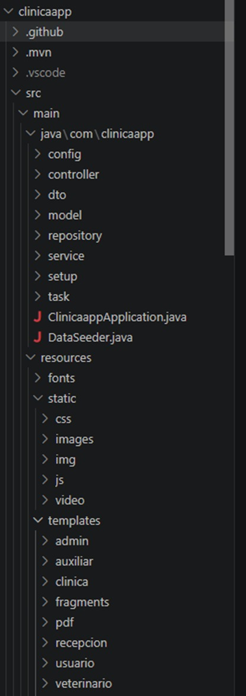
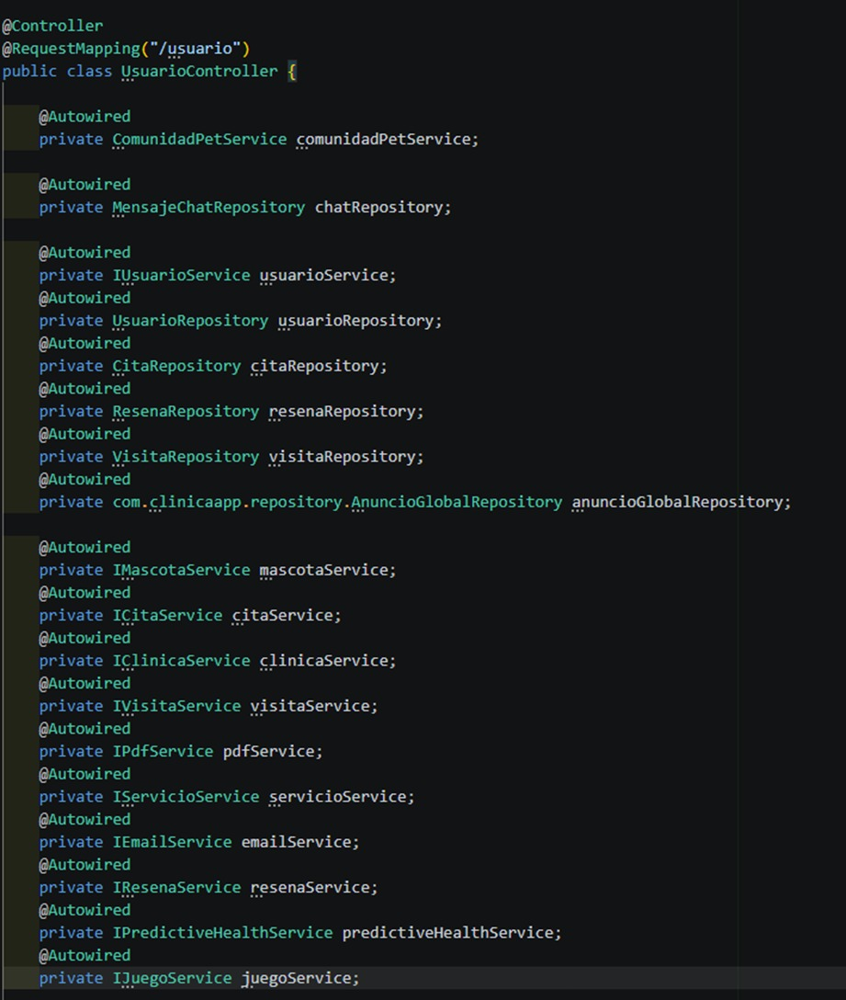
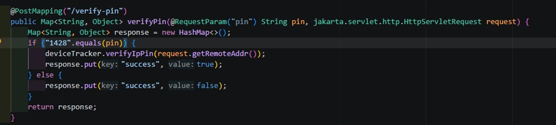
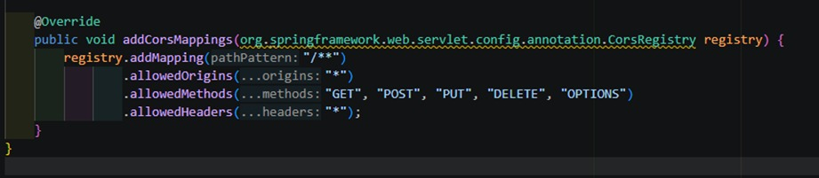
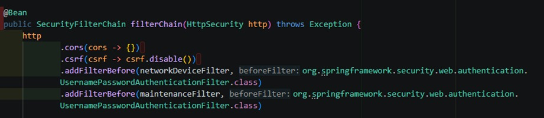
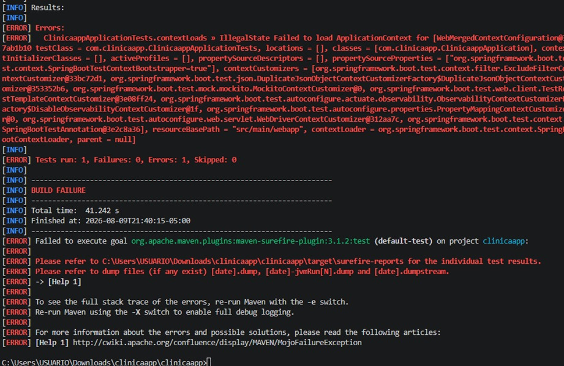
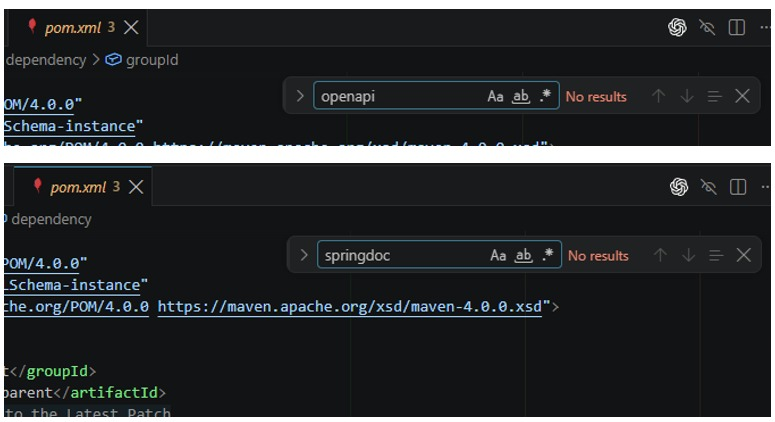

ClínicaApp
Evaluación técnica detallada del estado actual de una aplicación Spring Boot, basada en revisión de arquitectura, configuración, seguridad, manejo de errores, documentación y pruebas.
Estado Técnico General
La aplicación cuenta con componentes modulares avanzados de terceros, pero presenta vulnerabilidades críticas en seguridad y fallos de construcción en pruebas automatizadas.
Contexto & Stack Tecnológico
Problema que Resuelve
El backend auditado pertenece al sistema ClínicaApp, un ecosistema de software modular diseñado para la administración de clínicas veterinarias bajo un esquema multiempresa. La solución permite conectar diversas sucursales clínicas, gestionar propietarios de mascotas, historiales clínicos, coordinar citas médicas, procesar pagos y automatizar alertas de inasistencias o análisis predictivos de salud animal empleando algoritmos de clasificación de Machine Learning.
Tecnologías de Terceros Identificadas
Stripe Java SDK
Versión 22.8.0. Gestión y simulación de procesamiento de cobros para citas médicas.
Twilio Java SDK
Versión 8.29.0. Envío de alertas y confirmaciones de citas por SMS y WhatsApp.
Weka Stable Library
Versión 3.8.6. Motor de minería de datos para predecir inasistencias y riesgos articulares.
Groq API Client
Inferencia de pre-diagnósticos basados en modelos de Inteligencia Artificial (Llama 3).
OpenHTMLtoPDF
Versión 1.0.10. Renderizado de plantillas HTML en documentos PDF de recetas médicas.
Spring Security 6
Autenticación de usuarios, flujos OAuth2 (Google/GitHub) y verificación biométrica.
Análisis de la Arquitectura Física
Capas de Software e Interacción
Haz clic en cada una de las capas para visualizar la estructura del código, los archivos involucrados, fortalezas encontradas y los errores arquitectónicos auditados.
Selecciona una capa arquitectónica para ver su diagnóstico detallado.
Controller → Repository Bypass
Los controladores encargados del flujo principal de datos omiten la capa de servicios intermediaria y consumen directamente las interfaces de la capa Repository.
Evidencias Encontradas
- UsuarioController.java: Inyección de UsuarioRepository (L80), CitaRepository (L82), ResenaRepository (L84), VisitaRepository (L86), AnuncioGlobalRepository (L88).
- ClinicaController.java: Inyecta directamente 8 repositorios (Líneas 66 a 98).
Violación de Responsabilidad Única (SRP)
Los controladores concentran lógica de transformación, formateo, conversiones a DTOs y lógica transaccional redundante.
Tamaño de Clases Auditado
- UsuarioController.java 2,016 líneas
- ClinicaController.java 1,211 líneas
Parámetros & Secretos de Aplicación
Carga y Desacoplamiento de Entorno
La configuración técnica reside en los archivos application.properties y application.yml.
Interpolación de Variables
Secrets como las API keys de Stripe y la URI de MongoDB se leen del entorno local en ejecución.
stripe.api.key.secret=${STRIPE_SECRET_KEY:}
spring.data.mongodb.uri=${MONGODB_URI:mongodb://localhost:27017/clinica_veterinaria_db}
Ausencia de Perfiles de Ejecución
El backend carece de perfiles definidos por archivo (como application-dev.properties o application-test.properties).
Impacto Directo
Impide configurar comportamientos aislados y obliga a utilizar las credenciales principales, lo cual termina afectando la fase de testing del compilador local.
Control de Excepciones & Respuestas
Evaluación del GlobalControllerAdvice
La clase centralizada GlobalControllerAdvice.java no posee anotaciones @ExceptionHandler.
Su única función actual consiste en rellenar atributos del modelo HTML de Thymeleaf mediante el método addNotificationsToModel marcado con la anotación @ModelAttribute (Línea 29). Como consecuencia, ante errores de negocio o de mapeo, los clientes reciben páginas genéricas o stacktraces Java en crudo.
Comportamientos de Excepción Comprobados
Debido a la ausencia de Bean Validation (jakarta.validation.constraints) en Cita.java y DTOs, los controladores procesan campos nulos. Si un objeto JSON entrante está vacío, Spring Boot arroja errores HTTP de parsing o almacena datos inconsistentes en MongoDB.
En flujos de consulta (ej. buscar clínicas), ante una clave ausente el controlador captura el flujo e inicia una redirección web con parámetros de query en la URL (redirect:/buscar-clinicas?error=notfound).
Auditoría de Vulnerabilidades & Seguridad
Se desactivó globalmente la protección CSRF en SecurityConfig.java:L53.
Dado que ClínicaApp utiliza sesiones web basadas en cookies tradicionales (JSESSIONID) para roles de administración, esta omisión expone a los usuarios a ataques Cross-Site Request Forgery.
Se configuró la directiva CORS comodín allowedOrigins("*") en WebConfig.java:L22.
Los controladores REST individuales replican también esta anotación, permitiendo que cualquier portal web externo acceda libremente a la información médica de los pacientes.
Credencial/PIN estático hardcodeado detectado en ApiSystemController.java.
El PIN se valida en el código de producción mediante una comparación estática directa. Al estar la ruta /api/** permitida de forma pública en Spring Security, el endpoint es accesible sin autenticación.
Endpoints Públicos en SecurityConfig.java
El mapeo de filtros permite accesos públicos generales a todas las llamadas del prefijo /api/** sin verificar roles:
.requestMatchers(HttpMethod.POST,
"/registro",
"/forgot-password",
"/reset-password",
"/auth/login-facial",
"/api/**" // <-- Permite el acceso anónimo a la API REST de forma pública
).permitAll()
Contratos de Integración de API
Especificación OpenAPI / Swagger
La especificación interactiva del API no está integrada en el servidor.
La revisión de pom.xml constató que no hay dependencias del SDK Swagger UI (springdoc-openapi-starter-webmvc-ui). Esto obliga a los desarrolladores de la app móvil a leer y buscar las firmas Java de los endpoints de forma manual.
Pruebas Automatizadas & Construcción
Cobertura de Código
El proyecto posee un único test automatizado básico que verifica únicamente la carga inicial del contenedor de Spring.
@SpringBootTest
class ClinicaappApplicationTests {
@Test
void contextLoads() {}
}
Fallo Crítico al Compilar (mvnw test)
Las pruebas fallan y provocan un error de construcción general (BUILD FAILURE) si no existe un motor de MongoDB levantado localmente.
Causa: Al arrancar el contexto de pruebas mediante @SpringBootTest, se ejecuta el inicializador DataSeeder.java, el cual realiza consultas de persistencia a MongoDB sin contar con un entorno de mocking o base de datos embebida aislada.
Hallazgos Encontrados
Matriz de Madurez del Proyecto
| Dimensión | Inexistente | Deficiente | Aceptable | Buena Práctica |
|---|---|---|---|---|
| Separación de Capas | — | ✓ | — | — |
| Gestión de Configuración | — | — | ✓ | — |
| Manejo de Errores | — | ✓ | — | — |
| Seguridad Básica | — | ✓ | — | — |
| Documentación de API | ✓ | — | — | — |
| Pruebas Automatizadas | — | ✓ | — | — |
Línea de Tiempo y Plan de Refactorización
Fase 1 — Mitigación Crítica y Seguridad
InmediatoCorrección de brechas expuestas de acceso directo, hardcoding de llaves de monitoreo y reconfiguración de directivas de red del sistema.
@Value y proteger las rutas del subdirectorio /api/system/**.@ActiveProfiles("test")) y aplicar base de datos embebida o @MockBean en ClinicaappApplicationTests.java.Fase 2 — Robustez y Arquitectura
Mediano PlazoMejora en la organización del código fuente, separación de capas lógicas y robustez ante fallos imprevistos.
UsuarioController y ClinicaController. Encapsular la lógica en servicios.@RestControllerAdvice e integrar Bean Validation.Fase 3 — Documentación & Calidad
MantenimientoEstandarización de documentación y contratos técnicos para asegurar la continuidad de proyectos cliente complementarios.
springdoc-openapi-starter-webmvc-ui en pom.xml para habilitar la generación automática de la interfaz interactiva.Galería de Evidencias Técnicas

⚠️ Captura Pendiente
Captura de pantalla del panel lateral (Project Explorer) que muestre la estructura de paquetes de com.clinicaapp.
Estructura real del árbol de directorios y paquetes del backend.

⚠️ Captura Pendiente
Captura del código fuente donde se inyectan los repositorios de MongoDB en la declaración `@Autowired`.
02-bypass-service.jpgInyección directa de repositorios en el controlador omitiendo servicios.

⚠️ Captura Pendiente
Captura del condicional if de la validación del PIN. Asegúrate de ocultar/tachar el PIN real.
PIN estático de validación hardcodeado en la lógica del endpoint de sistema.

⚠️ Captura Pendiente
Captura de la declaración CORS universal allowedOrigins("*") en WebConfig.
04-cors-configuracion.jpgEspecificación permisiva de orígenes CORS universales habilitados para el API.

⚠️ Captura Pendiente
Captura del filterChain desactivando CSRF mediante csrf.disable().
05-csrf-security.jpgDesactivación global del filtro de seguridad Cross-Site Request Forgery.

⚠️ Captura Pendiente
Captura de la salida de consola mostrando el timeout de base de datos y BUILD FAILURE.
06-maven-test-failure.jpgBloqueo de compilación de Maven debido al acoplamiento físico con MongoDB local.

⚠️ Captura Pendiente
Captura de las dependencias en pom.xml corroborando la ausencia de springdoc-openapi.
07-swagger-no-implementado.jpgAusencia de librerías y consolas auto-generadas Swagger UI en la estructura pom.xml.
Síntesis Académica
El proyecto ClínicaApp presenta un desarrollo sofisticado e integraciones de gran valor práctico con librerías externas avanzadas (como Stripe, Twilio y algoritmos de Machine Learning de Weka). Sin embargo, el acoplamiento físico en las capas del sistema y las brechas severas en seguridad exponen al ecosistema a fallos lógicos durante el mantenimiento y a vulnerabilidades graves frente a accesos maliciosos.
La refactorización descrita en las fases del Roadmap es fundamental para garantizar que el proyecto sea viable, mantenible y seguro antes de su puesta en producción. Resolver la dependencia acoplada de base de datos en las pruebas locales es el primer paso necesario para implementar un flujo continuo de testing y asegurar la estabilidad de la lógica empresarial.